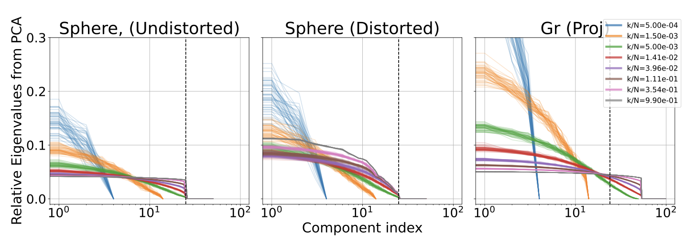

GEOMETRY · INTRINSIC DIMENSION · 2025–2026
Benchmarking Intrinsic Dimension Estimators
There exist many methods to estimate intrinsic dimension of a data manifold from a finite sample. But are they robust to anisotropy?
Begin with the sphere S².
SO(2) is the subgroup of SO(3) that fixes the chosen north-pole vector. The quotient is a homogeneous space, not a quotient group.
The space in which a manifold is represented is not directly related to the actual directions that one can access when on the manifold. For example, think of a circle. When drawn on a sheet of paper, it's in 2D, but we can really move in one direction - along the circle. Now imagine a ring in 3 dimensions, and it still only has one dimension we can freely move on.
This dimension, which is an inherent property of the manifold, is called the intrinsic dimension. As the name suggests, it characterizes several intrinsic properties of the manifold. In particular, it sets the scaling law for density of uniformly sampled points from the manifold. A nice introduction to manifolds is given in the classic book by John Lee.
It is obvious that estimating intrinsic dimensions from finite samples is important (this assumes data lies on a manifold --- the manifold hypothesis). It is also equally important to test how good these estimators are, especially when subjected to targeted stressors. We wanted to understand the role of anisotropy. Previous work however confounded anisotropy, homogeneity, local geometry, neighborhood scale, etc. What do we do ?
A benchmark with a targeted stressor and known answer
My collaborators and I developed HomID for the same. It consists of embeddings of homogenous spaces, which are locally anisotropic. But because they are homogeneous spaces, the local geometry and density is the same everywhere. And even in that case, we observed that the tested intrinsic dimension estimators performed quite poorly. More importantly, the failure mode is qualitatively distinct from just squeezing otherwise isotropic manifolds.

By the way, if you're curious about how these embeddings are generated, the general recipe is actually quite simple. It's based on the Gilmore-Perelomov coherent state method. The mathematical description sounds complicated, but the idea is simple (see the accompanying animation). Recall that homogenous spaces are quotient spaces of the form , where is a group and is a sub-group. If you're unfamiliar with groups and sub-groups, think of these as some class of actions (based on symmetries). A sub-group is then a sub-class of the actions. An example would be arbitrary translations, a subclass would be translation in fixed step sizes.
So the coherent state method suggests that you (1) take a state which is invariant under the subgroup and (2) apply on this state. The corresponding state that you get after (1) and (2) is a representation of the manifold .
The takeaway
A reliable dimension estimator must be robust to anisotropy as well. Tested estimators are not robust.
The principle
The key design principle for this benchmark was to understand the effect of anisotropy. In general, you should pick a problem/tool you care about, and ask what are reasonable properties that can affect the efficiency of this tool. Then design datasets which target those particular properties, making sure that you do not inadvertently change other properties.
A few useful terms
- Intrinsic dimension. The number of independent local coordinates needed to describe a manifold.
- Manifold. A space that locally resembles ordinary Euclidean space.
- Anisotropy. Dependence of a geometric property on direction.
THE PAPER
HomID: Benchmarking Intrinsic Dimension Estimators on Homogeneous Manifolds with Anisotropic Embeddings
Aritra Das, Joseph T. Iosue, Victor V. Albert
arXiv:2510.01335
NEXT PROJECT